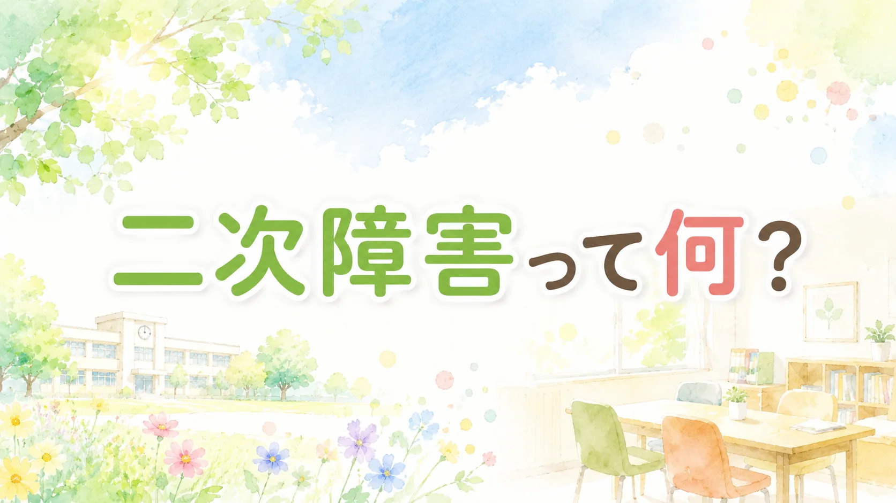

📖 知っておくと読みやすくなる言葉
- 一次障害（いちじしょうがい）
- → 脳の特性そのもの。生まれつきのもので、本人や保護者の責任ではない
- 二次障害（にじしょうがい）
- → 環境との不適合が積み重なることで、後から生じる精神的・行動的な問題
- 不登校（ふとうこう）
- → 文部科学省の定義では「年間30日以上欠席し、かつ病気や経済的な理由以外のもの」
- 自己肯定感（じここうていかん）
- → 「自分はこれでいい」と思える感覚。失敗体験が重なると慢性的に低下しやすい
「最近、子どもの笑顔が減った」「月曜日になると必ずお腹が痛いと言う」「好きだったゲームにも興味をなくした」――そんな変化に気づいたとき、それは二次障害の早期サインかもしれません。
発達障害のある子は、環境の中で毎日のようにつまずきを経験します。その積み重ねが、うつや不登校・引きこもりといった「二次障害」を引き起こすことがあります。でも、早めに気づいて動くことで、防げる可能性があります。
一次障害と二次障害の違い
まず、「一次障害」と「二次障害」の違いを整理しておきます。
| 種類 | 何が原因か | 例 |
|---|---|---|
| 一次障害 | 脳の特性（生まれつき） | ASDの感覚過敏・ADHDの不注意・LDの読み書きの困難など |
| 二次障害 | 環境との不適合の積み重ね（後天的） | うつ・不安障害・不登校・反抗・暴力など |
二次障害は「発達障害の特性への理解が環境に不足しているとき」に生じるものです（国立特別支援教育総合研究所）。保護者の育て方が原因ではありません。子どもが悪いわけでも、親が悪いわけでもありません。
二次障害の種類
二次障害は大きく「内在化」と「外在化」の2つに分かれます。
内在化（周囲から見えにくい）
- うつ状態（気力がわかない・何もしたくない・涙もろくなるなど）
- 不安障害（強い心配や恐怖が続く・パニック発作のようなことがある）
- 自傷行為（消えてしまいたい・自分を傷つけることがある、といった状態）
- 引きこもり（部屋から出られない・人と会うのが怖い）
外在化（周囲から見えやすい）
- 強い反抗・かんしゃく（制御できない怒りが出ることがある）
- 暴力・破壊行動
- 非行・問題行動
不登校
不登校は内在化・外在化どちらの文脈でも起こりえます。「学校が怖い」「もう頑張れない」という気持ちが背景にあることが多く、「行かないのではなく、行けない」状態です。
なぜ発達障害のある子に多いのか
発達障害のある子は、毎日の学校生活の中で多くの「失敗体験」を積み重ねやすい環境に置かれています。
- 「なんでできないの」と繰り返し叱られる
- 友達とうまくいかない・グループに入れない
- テストで点が取れない・宿題が終わらない
- 感覚の過敏さから、教室にいること自体がつらい
こうした体験が積み重なると、「自分はダメだ」「どうせ何をやっても無理だ」という考えが頭に定着していきます。これが自己肯定感の慢性的な低下につながり、やがて精神的・行動的な問題として表れてくるのです。
これは保護者の育て方の問題ではありません。子どもの特性に合わない環境が、子どもをじわじわと追い詰めているのです。子どもも保護者も、十分すぎるくらい頑張っています。
だからこそ、環境を少しでも変えることが、最大の予防になります。
不登校の現状
2024年度（令和6年度）の文部科学省調査では、小中学校の不登校児童生徒数は353,970人となり、過去最多・12年連続増加となっています。
発達障害のある子が不登校に至りやすいことは、複数の支援現場・専門家から共通して指摘されています。「特性と環境のミスマッチ」が長く続くと、登校そのものが困難になるケースは珍しくありません。
保護者が気づける早期サイン
子どもが直接「しんどい」と言えるとは限りません。以下のような変化が続くときは、早めに専門家に相談することを検討してください。複数重なる場合はとくに要注意です。
「消えたい」「死にたい」という言葉が出た場合は、当日中に以下のいずれかに連絡してください。
- かかりつけ医・主治医
- スクールカウンセラー
- 24時間子供SOSダイヤル：0120-0-78310
- よりそいホットライン：0120-279-338（24時間・無料）
感情・気分面のサイン
- 笑顔が明らかに減った、表情が乏しくなった
- ちょっとしたことで泣く、感情が不安定になった
- 何事にも無気力・無関心になった
身体面のサイン
- 月曜日の朝に決まって頭痛・腹痛・吐き気を訴える
- 睡眠が乱れた（眠れない・昼夜逆転・過眠）
- 食欲の著しい変化（食べない・食べすぎ）
- 身体に傷や痕があることがある（自傷のことがある）
行動面のサイン
- 大好きだった趣味・ゲーム・活動をやめた
- 部屋からほとんど出てこなくなった
- 年齢より幼い行動が増えた（退行）
- 入浴・着替えなど身の回りのことを自分でしなくなった
学校関連のサイン
- 「学校に行きたくない」が連日続く
- 「友達が1人もいない」「誰にも話しかけてもらえない」と訴える
- 遅刻・早退・保健室利用が増えた
- 連続して欠席するようになった
1つだけなら「今日はちょっとしんどいだけかな」と様子を見ることもできます。でも複数が重なり、それが2週間以上続いているようなら、担任への相談・スクールカウンセラーの利用・かかりつけ医への受診など、専門家への相談を早めに始めてください。
家庭でできる予防
二次障害の予防で最も大切なのは、「安心できる場所が家庭にある」ということです。学校でどれだけつらい思いをしても、帰ってきたときに安心できる場があれば、子どもはそこから回復できます。
1. 安心の土台をつくる
「どんなあなたでも受け入れる」というメッセージを、言葉と態度で繰り返し伝えてください。「今日どうだった？」という質問よりも、「帰ってきたね、おかえり」という声かけの積み重ねのほうが、子どもには届くことがあります。
2. 失敗体験を少しでも減らす
「もっと頑張れ」ではなく、「小さくできる形にする（スモールステップ）」という発想で関わってください。また、担任の先生に特性への配慮（座席・指示の出し方・テストの時間延長など）をお願いすることも、立派な予防策です。配慮を求めることは、甘やかしではありません。
3. 保護者自身のケアも予防になる
子どものことを一人で抱え込まないでください。保護者が疲弊すると、家庭の安心感も揺らぎます。発達障害者支援センターは、保護者自身の相談にも対応しています。「子どもを連れて行くのではなく、まず親だけで話を聞いてもらう」だけでも、大きな助けになることがあります。
「不登校＝学校に戻す」を最初のゴールにしない
文部科学省は「不登校は問題行動ではない」と明示しています（2016年通知）。不登校の状態にある子どもを無理に登校させることが、状態をさらに悪化させるケースは少なくありません。
二次障害が進行しているときは、「学校に行く・行かない」よりも先に、子どもの心と身体の安全を守ることが最優先です。状態が落ち着いてから、子どもと一緒にゆっくり選択肢を考えましょう。フリースクール・教育支援センター・オンライン学習など、学び方の選択肢は広がっています。
相談できる機関
| 機関 | 費用 | 対象・特徴 |
|---|---|---|
| 発達障害者支援センター | 無料 | 発達障害のある子と保護者が対象。保護者だけの相談も可。全国に設置 |
| スクールカウンセラー | 無料 | 学校に在籍する公認心理師・臨床心理士。子ども・保護者どちらも相談可 |
| スクールソーシャルワーカー | 無料 | 家庭環境や福祉制度との橋渡しが得意。複合的な問題に対応 |
| 小児科・発達外来 | 保険適用 | 身体症状（腹痛・頭痛・不眠）がある場合はまずここへ。発達検査も可 |
| 児童精神科・精神科 | 保険適用 | うつ・不安障害・自傷などが疑われる場合。専門的な診断と治療が受けられる |
| 教育支援センター（適応指導教室） | 無料 | 不登校の子どもが学校復帰や社会参加を目指すための公的施設 |
どこに相談すればよいかわからないときは、発達障害者支援センターに連絡するのが最初の一歩としておすすめです。地域の情報を教えてもらえます。
文部科学省「令和6年度児童生徒の問題行動・不登校等生徒指導上の諸課題に関する調査結果及びこれを踏まえた対応の充実について」
こども家庭庁「こども家庭庁における不登校対策」
国立障害者リハビリテーションセンター「発達障害者支援センター・一覧」
厚生労働省「発達障害者支援施策」
📌 この記事を使うヒント
子どもの様子がいつもと違うと感じたとき、この記事のサインチェックリストをパートナーと一緒に確認してみてください。1人で抱えずに、誰かと共有するきっかけになれば。
まなびの森教育研究所では、家庭でできる発達支援の実践ツールを提供しています。
「気持ちの温度計」や「スケジュール表」など、日常の安心づくりにすぐ使えるPDF形式です。